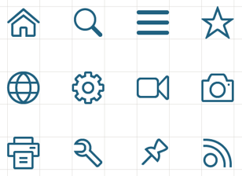
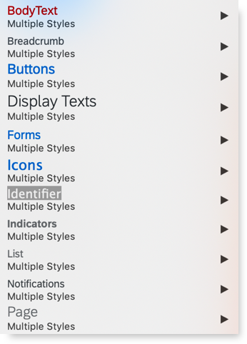
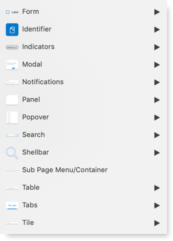
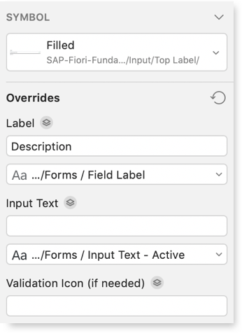

SAP Fiori Fundamentals UI Kit
UI Kit includes ready-to-use, state-of-the-art drafts of SAP Fiori layouts, patterns and controls in sketch. You are welcome to use the design stencils to visualize your SAP Fiori app. They are easy to use and give you a realistic impression of your final design.
Sketch UI Kit
Download UI Kit
To get the most out of our UI Kit please download the SAP 72 typeface and the SAP Icon font detailed below.
Icon Font

SAP icons have been created with a friendly, yet elegant style that is consistent in terms of size, stroke and balance. The icons are tailored for simple and direct user interaction, using metaphors that are easy to understand. Each icon has been hand-crafted, hand-hinted, and aligned in font format. The icons are essentially vector graphics which can be resized easily without compromising their appearance.
Download SAP Icon font72 Font
SAP 72 font family was designed from the ground up and made it possible to meet SAP Fiori’s typographic requirements, including - Legibility Enhancements, Font Styles, Brand Voice, Character Set and Language Support.
Download 72 Typeface
What’s new in v1.4.1?
The Fundamentals UI team is always making improvments to our Sketch UI kit. Keep track of updates.
New text style structure
The new Text Style structure draws a direct line to component and symbol names to make the menu easier to navigate.

Updated Symbols labeling
Simplified groupings, more informative labeling, and updated nested menus.

Streamlined Overrides
Simplified groupings, more informative labeling, and updated nested menus.
